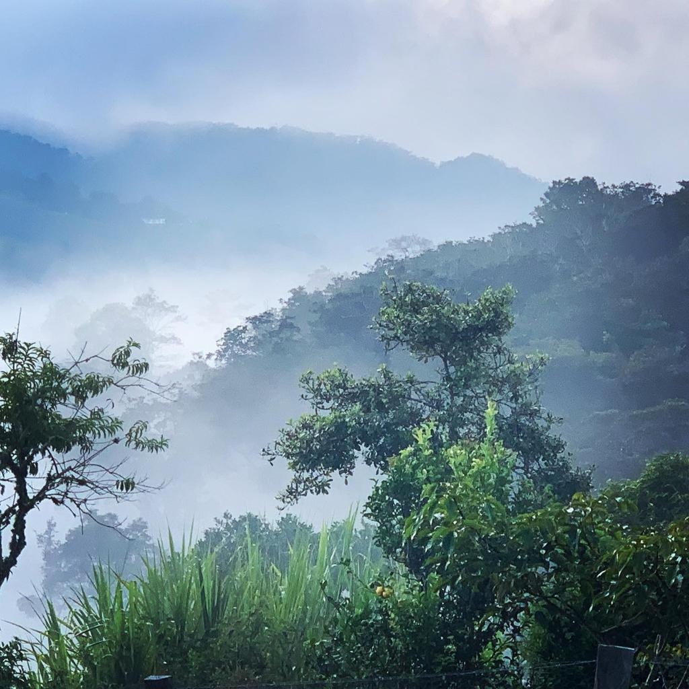

1. Introducción y Propósito
" Agua pide el labrador y el marinero viento,
y la lavandera pide
agua y sol al mismo tiempo "
El presente proyecto es una propuesta desde la visión y la temática soundscape que traducido al español puede significar “paisaje sonoro” desarrollada en los años sesenta por el compositor, escritor, docente y ambientalista canadiense Raymond Murray Schafer, incorporando aquí, paisajes sonoros rurales de los municipios de Piedecuesta y La Paz, y la ciudad de Bucaramanga, Santander, Colombia, esto con el fin de ser inspiración y apoyo sonoro a cuatro obras con elementos melódicos, armónicos, rítmicos y tímbricos de los aires santandereanos como la guabina, el torbellino, y el bambuco, para un formato tipo cuarteto interpretado por los maestros Cesar Andrés Castro Mora en el tiple, Jhon Fernando Huérfano Patiño en el piano y sintetizador, Juan Sebastián Palomino Tapias, en el contrabajo, y el autor, en la batería y percusión andina.
Generar una propuesta sonora desde las músicas andinas colombianas, aportando al repertorio nacional cuatro obras para un formato de tiple, piano y sintetizador, contrabajo, batería y percusión andina, por medio de grabaciones y análisis de paisajes sonoros rurales de municipios de Santander, Colombia que sirvan de soporte compositivo.
 Soy músico graduado de la Universidad Autónoma de Bucaramanga UNAB en el año de 2015 como baterista, logrando realizar arreglos, composicones y adaptaciones de artistas como Totó La Momposina, La Sonora Ponceña y La Fania All Stars en un proyecto que incluía instrumentos, estilos de interpretación y aires de las regiones colombianas Caribe y Pacífico, junto a la corriente salsera. He participado en la Banda de Vientos UNAB y Sinfónica UNAB, Igualmente he participado en la Sinfónica de la Universidad El Bosque, entre otros grupos, siendo parte de mi experiencia profesional.
En mi experiencia laboral he trabajado para Batuta y la OFB en el programa de Docente Formado en el colegio distrital Manuelita Sáenz, y en los programas de Escuelas de Formación Artística de diferentes localidades de Bogotá.
Actualmente, he logrado cursar la maestría en músicas colombianas en la Universidad El Bosque, donde me he desempeñado en la investigación de los aires andinos, siendo influencia por mi región de nacimiento, Santander. Siempre he sido un apasionado de la percusión en general, los ritmos bailables y las tradiciones, pero siempre tendré el amor por explorar diferentes artes y artístas, tanto nacionales como internacionales.